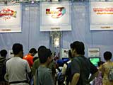
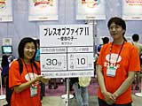
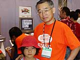
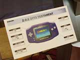

| #10 ゲームボーイアドバンス ライセンシータイトル体験コーナーレポート その２ |
ゲームボーイアドバンス ライセンシータイトル体験コーナーレポート その２ page1 ・・・ page2 |
| ● ストリートファイターZERO3↑（アッパー） カプコン |
|
 ２Ｄの対戦格闘ゲームでは代表的な作品「ストリートファイター」シリーズ。それぞれのキャラクターに思い入れのある人も多いんじゃないでしょうか。今回はシリーズ最新作の『ストリートファイターＺＥＲＯ３↑（アッパー）』がゲームボーイアドバンスに登場。アドバンスで持ち歩けば、いつでもどこでも技の入力練習ができてバッチリ。上級プレイヤーへの道も遠くない!? ３つの格闘イズムから好きなタイプが選べるので、同じキャラクターでも幅広く遊べます。 体験コーナーには格闘ゲーマーから、小学生くらいの男の子まで、たくさんのお客さんが並んでいました。画面はとってもきれいで、かなり細かい部分まで描きこまれています。キャラクターがサクサク動いているのも、アドバンスの能力がフルに生かされている感じですね。これなら、格闘ゲームマニアも大満足です。小学生の男の子も、華麗なワザをキメていましたよ。□ |
| ● ブレスオブファイアII 〜使命の子〜 カプコン |
|
 94年にスーパーファミコンで登場し、多くのファンを獲得した大人気ＲＰＧ。その第二弾を、アドバンスでリニューアルしました。昔ながらのＲＰＧのよさがいっぱい詰まっている王道のゲームですから、シリーズを知らない人にもおススメできます。アドバンス版では、スーパーファミコン版をさらにスケールアップさせた内容となっています。グラフィックも美しくなりました。 みなさんじっくり遊んでいくので、待ち時間も結構なもの。やはり人気なんですね。体験プレイでは、フィールドの移動も可能なので、世界観を知りたいかたにも満足していただけることでしょう。チョコチョコと動くキャラクターが可愛い！ |
| ● EZ-TALK 中級編（仮称） キーネット |
|
 ＲＰＧ風の英語学習ソフトです。物語の中で登場人物の話す本物の英語を聞きながら、数々のイベントをクリアしていきます。主人公の家はまったくのアメリカタイプ。バスルームや犬小屋の位置も日本とは違います。語学だけでなく、アメリカの文化も学んでほしいという意図で作られているそうです。 体験コーナーでは、１回の体験プレイで、主人公の１日の行動をひと通り終えることができます。好奇心いっぱいの小さな女の子たちが夢中になってソフトをプレイしていました。すでに４〜５人がリピーターとしてやってきているそうです。１度遊んで英語を覚えた子供たちが、もう１度ストーリーを楽しみに来るそう。「面白い！ 英語大好き」というのはなんと、７歳の女の子。外国人声優の発音を聞きながら、正しい英語を覚えることができるので、お母様がたにもおススメです！ |
| ● Z.O.E. 2173 TESTAMENT コナミ |
|
 コナミが展開する「Ｚ．Ｏ．Ｅ」の世界が、いよいよゲームボーイアドバンスに登場します。ゲームだけでなく、テレビやビデオでもおなじみの同シリーズ。今回は「Ｚ．Ｏ．Ｅ」の世界をベースに、まったく違うキャラクターにより、まったく違うストーリーが展開されます。ジャンルはゲームボーイアドバンス用に、シミュレーションＲＰＧとして作られました。舞台は150年後の太陽系。地球人と火星に住む人々との戦いを描きます。 ステータス画面なども全画面表示で見やすい印象です。体験ブースでは、子どもから大人まで幅広いユーザーさんがロボットバトルを楽しんでいました。アニメーションもきれいですね。 |
ゲームボーイアドバンス ライセンシータイトル体験コーナーレポート その２ page1 ・・・ page2 |
| 前のレポートへ | 次のレポートへ |
|
|